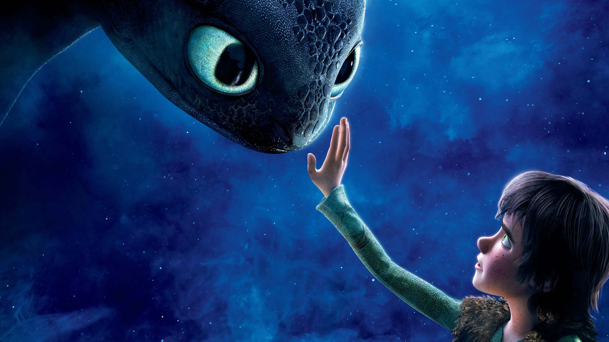

Desde que me lembro, sempre amei aprender sobre animais, independente da espécie.
Nunca fui do tipo de ter medo deles, pelo contrário, precisava pegar na mão pra ficar satisfeita (sim, eu dava trabalho).
Até hoje amo ter contato e aprender sobre qualquer tipo de animal, assisto canais no youtube e sigo contas que ensinam sobre o
mundo animal. Para mim, aprender mais sobre os animais é uma maneira de me conectar com o mundo e me divertir com a diversidade.
Meu animal favorito é o guaxinim. Eles "lavam" a comida antes de comer e tem mais de 51 sons diferentes, são praticamente bilígues.
Não tem muito tempo que eu passei a me interessar por motos, por isso meu conhecimento sobre não é tão extenso,
mas acho que o desejo veio de se eu sempre ter gostado de andar de bicicleta. Tenho uma noção básica sobre os
diferentes tipos de motos e como elas funcionam, mas eu ainda preciso aprender os detalhes técnicos. Meus tipos de moto favoritas são
a custom (motos estradeiras que não priorizam a velocidade, mas o conforto) e a esportiva (motos projetadas para proporcionar desempenho máximo,
rapidez e agilidade). No futuro pretendo comprar uma custom, talvez uma Fat BOB 114, pra poder viajar com ela e criar boas memórias.
Gosto muito de passar meu tempo assistindo filme, principalmente aqueles que você sai de boca aberta querendo assistir de novo. Gosto muito de filmes de suspense, romance,
policial e mistério, não vou dizer que não gosto de outros temas por que já assisti diversos filmes que não eram da minha zona de conforto e eles me impressionaram, como 'Pinóquio',
por Guilherme Del Toro. Os meus filmes favoritos de todos os tempos são a trilogia de 'Como Treinar o Seu Dragão' e a trilogia de 'Maze Runner'.

Música
Amo escutar música, me ajuda a concentrar e a fazer as coisas do dia, também me ajuda quando não estou me sentindo muito bem. Escuto muitos estilos de música, se eu
gostei do ritmo ou da letra eu vou escutar, independente da língua ou do estilo. Mas meu estilo de música favorita é metal, umas das minhas bandas favoritas é Motionless
in White.